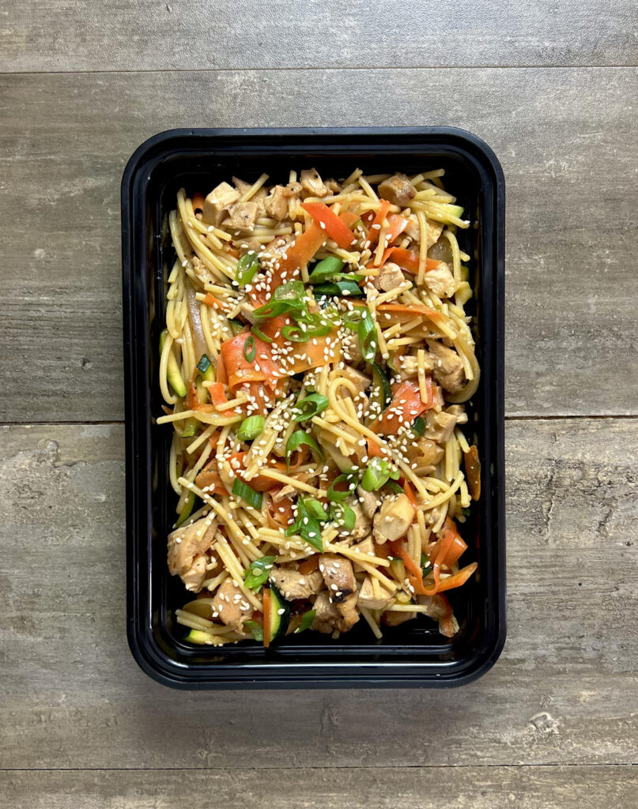

Honey Miso Noodles

Description
Honey Miso Noodles are made with chicken thighs, vegetables, and a sauce from red miso paste, soy sauce, honey, and chicken broth. These noodles have a nice balance of savory and sweet from the umami in the miso paste and sweetness from the honey.
Ingredients (for 6 servings)
For the sauce
- 3 Tbsp (60 g) honey
- 2 Tbsp (30 g) soy sauce
- 3 Tbsp (45 g) red miso paste
- 1/4 Cup (60 g) chicken broth
- 1 1/2 Tbsp (23 g) rice vinegar
For the chicken and noodles
- 12 oz (336 g) lo mein noodles
- 1 medium (200 g) sweet onion
- 5 medium (300 g) carrots
- 2 medium (300 g) zucchini
- 3 (15 g) green onions
- 1 Tbsp (15 g) minced garlic
- 2 1/2 lbs (1135 g) boneless skinless chicken thighs
- 1 tsp (3 g) garlic powder
- 1 1/2 Tbsp (23 g) olive oil
- 1 Tbsp (6 g) sesame seeds
- salt and pepper to taste
Instructions
- To make the best use of your time, read through the entire recipe before you start. Cook things like the noodles and chicken simultaneously to make things move faster.
For the sauce
- Combine the honey, soy sauce, miso paste, rice vinegar, and chicken broth together. Stir to combine and dissolve the miso paste.
For the chicken
- Preheat your oven to 425℉
- In a large bowl, add your chicken and season lightly with salt and pepper. Add in 1 tsp of garlic powder, 1 tsp of oil, and 1/4 of the sauce mixture you just made. Toss it around to evenly distribute.
- Place the chicken onto a large sheet pan smooth side down. Bake for 8-10 minutes on the top rack.
- After 10 minutes, turn the oven to broil and cook for 4-5 minutes to encourage the chicken to brown. Watch it carefully as it will be prone to burning under the broiler. Sometimes it helps to leave the oven door cracked open a bit.
- Once the chicken has browned and developed some color, pull it out of the oven and allow it to rest for at least 10 minutes. Temp it and make sure it is at 165℉ to ensure it is done.
- Cut the chicken into small bite sized pieces.
For the noodles
- Prepare your noodles according to the packaging. Once they have finished cooking, rinse and store them with cold water to stop the cooking process. Keep them in the cold water until you are ready to use them. Drain the water away when you're ready.
For the vegetables
- Wash and cut all of your vegetables. Cut the onion into thin slices and the zucchini into a julienne (thin strips). Using a vegetable peeler, go down the length of the carrot to create thin ribbons. Roughly chop the ribbons into smaller pieces with a knife.
- In a large skillet, add a bit of oil over medium heat. Add in the onions and season lightly with salt. Cook for a couple of minutes until they have begun to brown.
- Make room in the center of the pan and add more oil if needed. Add the zucchini and allow it to cook down and brown a bit.
- Again, make room in the center of the pan to add the carrots and garlic. Cook for an additional two minutes or until the vegetables are softened a bit.
For combining and serving
- In a large bowl, add the noodles, chicken, vegetables, and the remaining sauce you made. Stir to combine and season with salt and pepper to taste.
- This recipe makes 6 servings. Divide your honey miso noodles evenly into 6 containers. Garnish each container with chopped green onions and sesame seeds.
Credits
Recipe content taken from Meal Prep Manual.